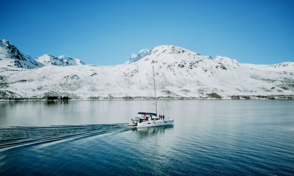
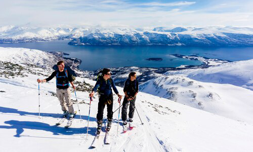

NATIONAL GEOGRAPHIC
Extreme adventure at the edge of the word sail and ski in Norway
TRAVEL
- 
- 
“Sometimes you have to do things you’ve never done to get to places you’ve never been.” These are the words of wisdom offered by our mountain guide, Espen Minde, as we take a break from climbing 1,000 metres on skis up an unnamed peak in Norway’s Lyngen Alps. Something, indeed, I’d never done before. We’re also climbing straight into a blizzard. Normally, in conditions like these, I’d have turned back or maybe not even set off in the first place. But Espen, being a Norwegian mountain guide, isn’t put off by driving snow, howling winds and zero visibility. And as our group comprising six other skiers has every confidence in Espen’s years of experience touring these wild, often unnamed mountains, we plough on.
Ski touring in the Lyngen Alps isn’t always like this, of course. Aboard the Arctic Eagle catamaran, the comfy floating accommodation for our ski and sail trip around Norway’s northeastern shores, we’ve seen all weathers. On the first day, having sailed for three hours from its base in Tromsø, Arctic Eagle anchored off the coast of Vanna island, afternoon sunlight glinting on the waters of the fjord as our captain, Håkon, ferried us to the rocky shoreline.
Once on dry land, we start our 1,031-metre ascent of Mount Vanntinden. The snowbound peaks of the Lyngen Alps bear down on us from all quarters, rising majestically up into a baby-blue sky. There’s not a soul to be seen and not a sound to be heard other than the gentle lapping of sea against shore.
Espen leads us at a gentle pace, with breaks to take in the view. It’s late April and we’re well north of the Arctic Circle so we have plenty of daylight. The views as we ascend become more spellbinding, the slowly sinking sun casting an increasingly golden glow across mountains and sea. By the time we reach the summit, the sun is just above the horizon and we’re on top of the world in every sense. It’s high fives all round, a fast round of photos, then we need to get moving to get back to the boat before dark.
We remove the climbing skins from the base of our skis (the sheathes that allow you to ascend without constantly slipping backwards), flip our ski touring bindings to ‘descend’ mode, don a couple of warm layers, tighten up rucksack straps, clip into our skis again and set off downhill.
We’re able to spread out and enjoy big, swooping turns across huge snowfields almost all the way back down to the fjord, skiing into the setting sun, a glorious landscape of deserted mountains and dark-blue sea spread before us. Whoops and hollers of excitement are inevitable and why not? There’s no one else around.
Back aboard Arctic Eagle, everyone is ready for a beer, but not before one unavoidable Arctic ritual: a quick dip in the icy Norwegian Sea. With the water temperature at around 5C, no one stays in for long. Warm and buzzing after a hot shower, we gather in the catamaran’s galley around the large table to enjoy freshly caught cod and cold beers, before Captain Håkon, who’s sailing us east to anchor off the coast of Arnøya island for the night, shouts: “Quick! Come up on deck!”
The Northern Lights are doing their thing in the starlit skies above. A relatively muted display of pale-green swirling waves passing over us, but it’s a winning finale to the perfect day. Not every day is so blessed, of course. This is Arctic Norway and the only predictable thing about the weather is its unpredictability, but over the course of the trip we get to ski amid the most incredible scenery, in everything from sunshine to mist, sleet and snow. Eventually, six days after setting sail from Tromsø, Arctic Eagle returns us to its home port. Exhausted, sunburnt, weather battered and happy, we step ashore and say a sad farewell to Captain Håkon and Espen, safe in the knowledge that it’s absolutely worth doing things you’ve never done to get to places you’ve never been.
Comments :
- john Very good
- john Very good
Leave a Reply
Your email address will not be published. Required fields are marked*
Related posts:
-
 These 6 U.S. Christmas markets feel like a fairy tale
These 6 U.S. Christmas markets feel like a fairy taleEurope, especially Germany, is rightly famed for its Christmas markets that bring a fairy tale sense of wonder to the season. But you don’t have to journey abroad for holiday magic—these fairs in the United States
View article -
 A family city guide to Edinburgh
A family city guide to EdinburghEdinburgh is like a scene from a storybook, its spiky turrets, soaring towers, grand squares and cobbled streets every inch the sort of places dragons and princesses would inhabit not to mention
View article -
 A family city guide to Paris
A family city guide to ParisDogs in handbags, whimsical fountains, rogue Statues of Liberty and cakes like jewels. Paris mesmerises all ages with its sights, sounds and spectacles. Introducing the kids to the Mona Lisa or scampering up the Eiffel Tower
View article